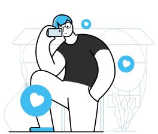

The Agenda
- Simplifying problem statement
- Framing the 5W’s and 1H questions.
- Secondary research
- Primary research
- Analysis of insights
- Defining problem
- Ideating solutions
- Lo-fi design wireframes
- Ui screens
- Validation testing (feedback)
1. Simplifying problem statement
- With the pandemic and lock down there was an increase in users of dating apps however there have been decline in conversion ratio and bounce rate, People tend to get bored and confuse with the large number of options available still not be able to break the deal .
THE TOPIC & PROBLEM
Perfecting Dating {scenario} app for finding partners , casual friends,like-minded, romantic relationship
THE TRIGGER
One of the reason is Covid-19 pandemic that lead to the lock down and therefore an increase in Users.
*RESEARCH PROBLEM STATEMENT:
Massive drop of rate in matches and successful conversion,to uncover potential areas of improvement from the current mobile dating applications. in depth analysis of people behavior the factors that influence their decisions.
2. FRAMING THE 5W’s AND 1H QUESTIONS.
-
WHAT is the problem that we need to solve?
What are Dating apps? i need to figure out what exactly the users are struggling with while using Dating apps. What is their current user experience and what can be improved?
-
WHAT is the purpose of the business?
i have to understand why it is important for the business to solve the problem of the users. How will it benefit them? Understanding user patterns while interacting with the app
-
WHO are the users?
Research is required on the demographic using dating platforms. And analysis is required as to what factors affect the said demographic. (type of platform, options, time period affecting the gender, age, location, the number of people using at a time)
-
WHEN did this problem arise? WHEN did the users start using these platforms?
Need to understand the factors that led to usage of these platforms. Did the pandemic have anything to do with the surge in users? if yes, then how?
-
HOW often do the users use Dating apps?
The frequency of app usage must be looked into. What time of the day are they utilizing the resource and what affects that decision. What triggers the usage of these apps?
-
WHAT factors affect the decision of the users?
While going through the app or profile that they want to match, what is their mindset? What reasons do they consider? Does age, gender, the liking, caste or availability come into play? if not, what else does?
3. Secondary Research.
 Goal is to didn’t get in trap of The Filter Bubble which supports our own hypothesis,and look beyond.
Goal is to didn’t get in trap of The Filter Bubble which supports our own hypothesis,and look beyond.
The study used a grounded theory approach, with Diary study and semi-structured interview .
Our research goal is to find out the pain points users have, and then we will focus on how to improve the user-experience of mobile dating apps, specifically with young adults(18-24 years and 25-34 years) as we believe that these two age groups are important to look at in regard to demographic use and age.
REASONS FOR RISE OF DATING APP :
- Availability of low-cost mobile data
- Affordable smartphones
- The availability of the internet in rural areas of the country has been growing rapidly. While internet penetration in these areas was 13% in 2015, it nearly doubled to 24% in 2018.
- Large amount of people don’t trust dating app still use it Source :https://www.axios.com/2018/02/06/axios-servey-people-don't-trust-dating-apps
 Source : https://indianexpress.com/article/india/dating-apps-tier-ii-cities-women-7150680/
Source : https://www.cnbctv18.com/buzz/looking-for-love-dating-apps-cash-in-on-85-million-young-and-single-indians-3306141.htm
Source : https://indianexpress.com/article/india/dating-apps-tier-ii-cities-women-7150680/
Source : https://www.cnbctv18.com/buzz/looking-for-love-dating-apps-cash-in-on-85-million-young-and-single-indians-3306141.htm
CHALLENGES AFFECTING THE USERS :
{These are anecdotal findings}
“Furthermore we decided to take semi structured insights through users in the form of survey to understand what problems they are facing in dating app”


Participants when asked how much time they spent on dating app ?
Some crucial findings {Hypothesis} :
- Those individuals serveyed who denied using online dating stated reasons such as they are not looking for a partner at all, the most common reason.
- Others stated that they prefer meeting people other ways, don't trust people online, or feel that meeting online would lead to a type of relationship in which they were not interested.
- We find many contradictory answers with respect to choices and findings in matching algorithm , not everyone is open and ready to share deep insights with their choices and matches
- The most challenging issues stated by participants in the servey were with regard to time consumption (44.3%), followed by people lying (20.3%), and then harassment [Unethical behavior] (10.1%).
- 60% of people are comfortable dating someone who they have met online or outside their circle through their friend or introduced by their friends(mutual).
Rest 40% were not sure


Roughly 80% of consequences come from 20% of causes: PARETO principle
Primary research will focus on the factors/causes that affecting the decision-making process on dating platforms.
4. Primary Research
“ Probably of customers we are not talking to are the majority of customers or users who are just satisfied“
We decided to dig deeper to gather real time problems, so we organize a Virtual call with audience varying different streams of industry and have a common shared interest over dating and finding partner or friend over apps.Virtual call was a twitter space event were we took help of moderators to have chit-chat with a 32 year old professional running CBC on dating and meeting like-minded professional. we discussed over the inline problems dating scenario is going through.

General representation
KEY INSIGHTS FROM THIS STAGE:
Statements from virtual call {Users} :
Root cause around dating scene ?
> modern age world has our own identity, want to be recognized , we have our own opinions, take our own decisions ! back then we were identified by our mother father and family, collectively people decide for you,that's why you don't have so much freedom to decide for yourself
Now Globalization has kicked . We live in now tech first world, we can make our own choices. now we are not defined by family which we are born ! professionalism is not linked to the caste any more !! are some reason that why we are independent, in this entire equation were education is accessed and modern world individualism and society the age of getting married is delayed bcoz of that .
But these independence come with much of complexions , pressure = more decisions to make=more pressure
Now as a resultant we have so much of options we have time to optimize those options,
and in that process dating become little harder
There are 3 dating scenes right now : kind of emerged
Maximisers
Maximisers are people who are ready to give a call and say there's never going to be 200% perfect, so lets try or they are ready to go and figure out scene, who are willing to change the scenario who end up being happy also satisfiers
Romanticisers
Karan Johar movie fans = dil ki ghanti bajegi basically people who think things organically going to happen . they don't want to put effort , they want people to come in their life ! some are FOMO people , but trying to optimize.
Hesitators
Hesitators are people who are forever living in FOMO who think they are 83% matched through a person , if i go through more i could match up to 85.87% . who hesitates to figure out end up being more sad
5. Analysis of insights
Lot of data has been gathered and to get better understanding of the user’s behavior i will be classifying the types of users categorically. The type of user and their priorities are systematically chalked out.
Personas are boring
In the real world, we are designing for a context, not for an individual. Each person lives in a family, a community, an ecosystem, were there are environmental, political, and social factors you need to consider. A design is never meant for a single user. Rather, we design for one or more particular contexts in which many people might use that product. Personas, however, show the user alone rather than describe how the user relates to the environment.We are focusing on 3 major groups, those are Hesitators,Romanticisers and Maximisers
*inspired by Netflex story, this is how they categorize you and show targeted content by dividing into groups Customer journey map as evaluative process
Customer journey map as evaluative process

6. Defining problems
Pin pointing the areas we need to solve through HMW framework
-
1: Lack of open conversation
Q: How might we review the process of matches
-
3: Trust issues weather profile is fake or not
Q: How might we add layer to the credibility system ensuring users their safety at topmost priority
-
4: Swiping without reason
Q: How might we engaged user more without disrupting mental models
-
5: People don’t trust still use it
Q: How might we engaged trust with our network effect
7. Ideating solutions

-
How might we review the process of how users engaged with profiles/matches?
Dating apps have massive swiping algorithm with categorisation, users get exhaust of profiles often, it’s similar to how TikTok selects videos for you to view and Amazon nudges you towards purchases.
Possible solution
USER CONTROL & FREEDOM to users by allowing them to review their matches or see previous profile in profile section with a tab which they might miss by chance, or engaging users by showing them their mutuals with the screen profile.
Enabling chances to users for a rematch (2nd option) if first is miss by chance (Error Control), giving enough info to possible matching user to stalk, making bio more interesting with adding feature like “video bio”or profile rating.
Showing possible matches based on user sets or preferences , recommendation by mutuals, categorization by blind date, top 10 singles, newly singles, trending profiles, originals. -
How might we engaged trust with our network effect
Dating apps have large amount of fake profiles and gender imbalance after covid so it’s a huge task for apps to keep their fake profiles on check.
Possible solution
Adding green flags and red flags as feature in profile to help users get quick scan, show users upfront number of users have blocked this profile
Users could level up their chances if we could help them with peers over physical events which they can subscribe through app in purchase, collaborate with events and organizers like meet-up on weekend which could get traction and act as Catalyst. -
How might we enhance chat experience
Chat window of apps are simple yet they are not deal breaker , its ghost town, majority of times its not intuitive.
Possible solution
We can add little features like “Virtual wink” or “poke” earlier we have in meta or “QUIZ” in chat window to make conversation alive who have less texting skills
another feature we could possibly offer is to introduce short games like {THiS or THAT} in chat window.
adding highlight of the day as feature to keep users engaged
8. Low Fidelity Wireframes
Designing the possible outcome of pain points mapped through research and ideation with respect to existing mental model of dating app .
NOTE: For the purpose of focusing on the problem statement, i took a base application to avoid unnecessary creation of an app from scratch. The one i chose was ‘BUMBLE’.
9. Ui screens
Here i focused on making the prototypes with intention about the main goal of the screen flow, their problems about it and an attempt to improve it.
1.How could we enhance chat experience?
Giving users Virtual wink feature to engaged with potential match
introducing a short game ”This or That” for users.
- A game in which the user can select their favorite image between two choices. images might be dogs, cats, cars,houses, pretty much anything.
- Use a leaderboard in which the user can see the top 10 voted images
- Using Public API’s it is easy to made without going into much development cost and Tech Constraint.


2.How to solve Trust issues with users weather profile is fake or not ?
Solution- Adding
 RED
and
GREEN
flag as CTA with which users can report or give green signal if profile is safe and with red signal can tell other users about the fake profile.
RED
and
GREEN
flag as CTA with which users can report or give green signal if profile is safe and with red signal can tell other users about the fake profile.
Number of users who have blocked this users would be seen in profile to fecilitate users. *
3.Swiping without purpose, lack of texting skills {low conversion rate of matching}
-Not trusting still using it without success.
Solution- Introducing Bee events with peers where users can engaged with community of their liking and affection and get involved in events happening in their surrounding.
This will also boost premium travel mode feature of bumble.

4.Time taken to match with potential date or time consuming ?

Adding bumble bio a feature to share video bio ”introduction” with photos which can give boost to engagement metrics.
5.Not getting intended profiles or matches
Catalyst or matches according to Preferences or as we call “Filters”

6.How users can increase their chances of matches as swiping like scrolling makes it hard to get noticed?
Solution- HIGHLIGHT feature of the day in form of story one of day and one of night 
Users can customize it to keep it public or private
10. Validation testing ( feedback )
Functional Prototyping
I used Figma to create a functional prototype of all the screens. Check it out .📲
To validate the changes i made, i interacted with users who are familiar with Bumble app or any dating app with my prototype. i asked them mix and some same questions from my initial tests and recorded their behavior and feedback.
- WHAT WORKED OVERALL
- Discoverability of bee events is not difficult to get .
- Categorization of Bio and video upload were recognized noticeably .
- WHAT DIDN’T WORKED
“This or That” were hard to discover , instead we put that option
in bottom panel navigation
Virtual wink was not at all appreciated , user’s hesitated to use
in chat screen.


Red and Green flag were unrecognizable ,not helping users
to serve its purpose.
Those were replaced by 
 with change in bottom
with change in bottom
navigation


Earlier Highlight icon was not being recognised as well as being not highlighted as intended

While reviewing this case study an IMPORTANT suggestion
was made by our Developer artist to assist development team
to categorise user’s they should be given choice to choose among
HOW they like to be identified?
Sample design
Final design
- Future scope
- Being able to track the Progress based on the users’ daily activities and moods with respect to changes we made.
- How often are users interacting with the new product or feature and which parts are they most engaged with
- Key Learning
- I’d like to do more research on factors that can help increase engagement and trust and test out how interative content can be integrated into the app to make experience better.
- Solving wrong problems which suits our hypothesis and bias will lead to danger zone at end which will eventually being crushed .